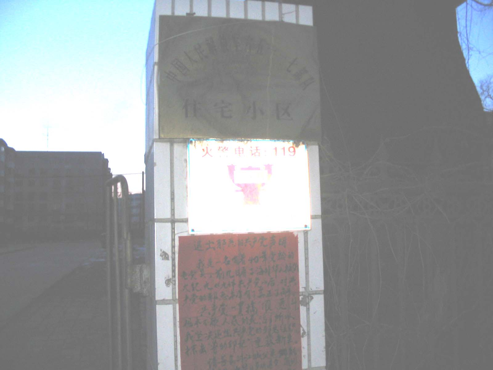
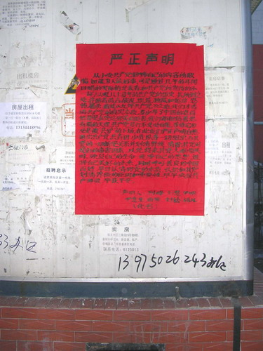
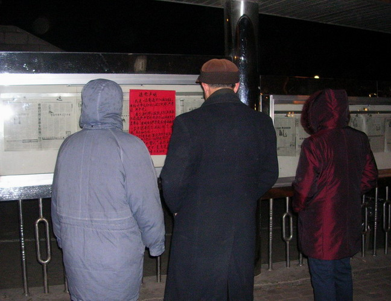
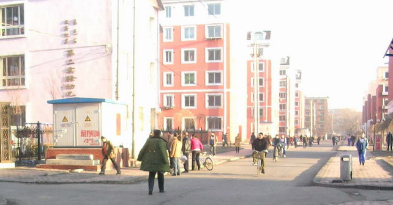
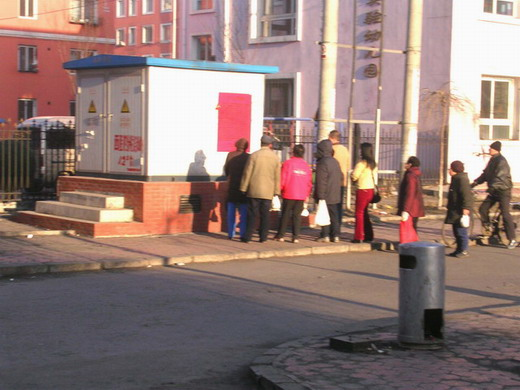
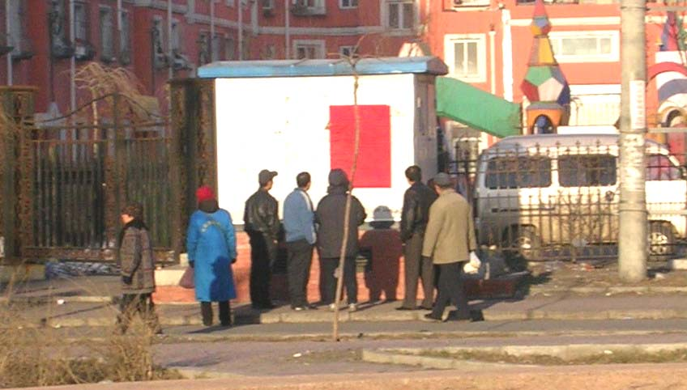

9/3/05 — Từ MINHHUE.NET
Một công dân thành phố Cát Lâm
Từ khi Thời báo Đại Kỷ Nguyên xuất bản một Cửu Bình —Chín bài bình luận đảng cộng sản— cuối tháng 11 năm 2004, đến nay, hơn sáu trăm ngàn người đã tuyên bố thoái rời ĐCSTQ (Đảng Cộng Sản Trung Quốc). Số người thoái đảng đang nhanh chóng tăng lên.
Dân số thành phố Cát Lâm có hơn 4 triệu người, bao gồm 5 điạ hạt và 5 thị xã, công nhận là “Thành phố ven sông phương bắc của Trung Quốc”. Gần đây, ở nơi công cộng cư dân đã trông thấy nhiều thông cáo to lớn “Thoái xuất Đảng Cộng Sản Trung Quốc”. Những người qua đường thường họp lại thành nhóm đọc bản công bố và tranh luận sôi nổi.

Một thông cáo Cửu bình xuất hiện ở cổng rào nơi cư trú của quân đôị #65117

Một thông cáo Cửu bình trên bảng yết thị của nhật báo Giang Thành

Những người tập thể dục buổi sáng họp laị nơi bảng yết thị của nhật báo Giang Thành đọc lời tuyên bố

Nhữrng người qua đường đọc lời tuyên bố
Có một thông cáo gần toà nhà của nhật báo Giang Thành, một phụ nữ tên là Hạ Thanh Liên viết rằng: Tôi là cư dân ở thành phố này, tôi đã gia nhập Đội Thiếu Niên Tiền Phong, Đoàn Thanh niên và Đảng Cộng Sản. Vì tôi hoàn toàn chẳng biết bản chất chân thật của Đảng. Sau khi đọc hết “Cửu bình cộng sản đảng” tôi mới hoàn toàn hiểu thấu 80 năm lịch sử của Đảng Cộng Sản Trung Quốc, và nhân thức được bản chất ác độc của nó. Tôi tuyên bố thoái xuất Đảng Cộng Sản Trung Quốc và giũ sạch dấu vết liên quan với đảng cộng sản.
Thông cáo khác xuất hiện gần nơi cư trú của quân đội. Lời tuyên bố như sau của ông Vương Trác Việt: Tôi đã từng là sỹ quan trong quân đôị. Lúc trẻ tuổi, tôi đã tham gia Đội Thiếu Niên Tiền Phong và Đoàn Thanh Niên. Với mơ tưởng phục vụ dân chúng, tôi cũng đã gia nhập Đảng Cộng Sản. Lúc lớn tuổi và nhìn thấy những sự việc xảy ra xung quanh tôi, đặc biệt là ở quân đôị, quân dân đều bị tẩy nảo để theo đuổi một chế độ Đảng Cộng Sản Trung Quốc. Chế độ Đảng Cộng Sản Trung Quốc được đặt bên trên quyền của quốc gia, để trên lơị ích của dân chúng, và bản tính đạo đức con người. Vài sỹ quan đấu tranh lẫn nhau chỉ vì lơị lộc cá nhân và dùng những phương kế đê tiện, cũng như các thủ đoạn gian trá bẩn thỉu, ngay cả giết kẻ đối lập. Với sự tẩy não của Đảng Cộng Sản, đạo đức của con người đã bị xói mòn, thành ra tư tưởng của họ trở nên xấu xa. Trong lời tuyên bố của mình, tôi cảm ơn thời báo Đại Kỷ Nguyên, vì thời báo Đại Kỷ Nguyên mang đến một vật quý báu “Cưủ Bình cộng sản đảng”, nó bộc lộ bản chất của Đảng Cộng Sản. Thời buổi này, ĐCSTQ đã trở thành một đảng thối nát nhất trên thế giời. Tôi muốn hoàn toàn thoát rời những liên quan với cái Đảng này và long trọng tuyên bố thoát rời Đảng Cộng Sản Trung Quốc.
Một thông cáo khác gần nơi thông cáo của ông Vương, đã là đảng viên 40 năm với Đảng Cộng Sản Trung Quốc. Ông nói rằng: Đảng Cộng Sản lúc nào cũng “gian xảo, đồi bại và tàn ác”. Ông quyết định thoát rời Đảng Cộng Sản Trung Quốc và sống một đời sống mới. Ông thỉnh cầu đọc giả nên phân biệt được đúng và sai và cũng nên thoát rời Đảng Cộng Sản Trung Quốc.
Thông cáo thứ tư là thông cáo của một nhóm bảy người. Viết rằng: Trong thời kỳ mười năm nay ĐCSTQ đã dùng dối trá che mất bản chất của nó, hầu liên tục lừa dối dân chúng Trung Quốc. Lịch sử của ĐCSTQ là một lịch sử tàn sát. Họ đã đọc “Cưủ Bình cộng sản Đảng” và nhận thức được bản tính của ĐCSTQ, vì vậy họ quyết định thoát rời Đảng.
{kind=link}
{kind=link}
{kind=link}
{kind=link}
{kind=link}
{kind=link}
{kind=link}
{kind=link}
{kind=link}